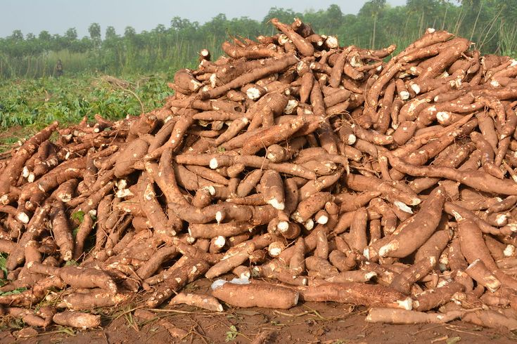
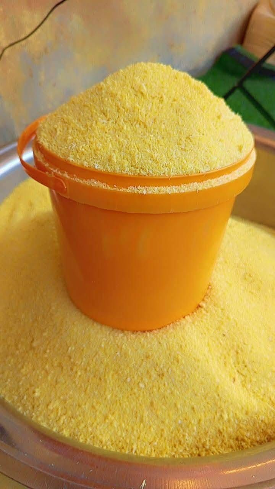

Nos produits
Découvrez nos produits locaux de qualité

Maïs
Maïs de haute qualité, cultivé dans la région des Plateaux. Riche en nutriments et idéal pour la consommation humaine et animale.
Céréales
Manioc
Manioc frais de la région Maritime. Parfait pour la préparation de gari, attiéké et autres plats traditionnels togolais.
Tubercules
Ananas
Ananas sucré "Cayenne lisse", réputé pour son goût exceptionnel. Cultivé naturellement sans pesticides chimiques.
Fruits
Farine de maïs
Farine de maïs biologique, obtenue par mouture traditionnelle. Idéale pour la préparation de pâte de maïs et autres plats.
Transformés
Gari
Gari de manioc de qualité supérieure, produit selon les méthodes traditionnelles. Aliment de base riche en glucides.
Transformés
Jus d'ananas naturel
Jus d'ananas 100% naturel, sans additifs ni conservateurs. Fraîchement pressé à partir de nos ananas mûrs.
TransformésNos produits en images

Maïs
Cultivé avec passion dans nos champs

Ananas
Le fruit roi du Togo